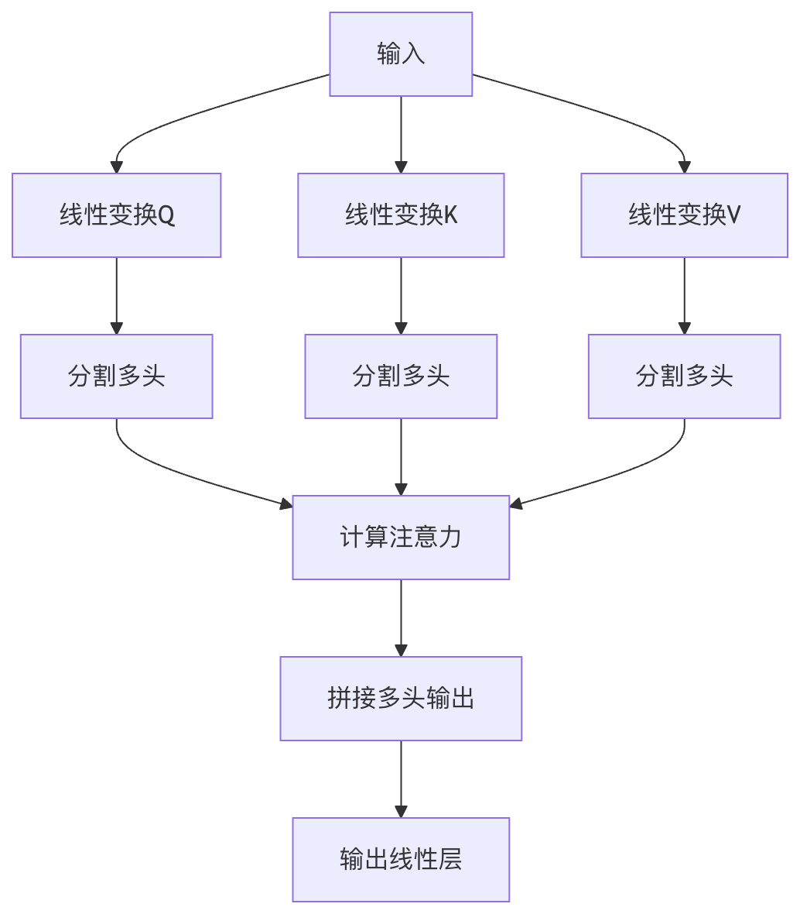

注意機構
注意機構（Attention Mechanism）はディープラーニングにおける重要な技術の一つで、人間の視覚および認知プロセスにおける注意の配分方法を模倣しています。読書中に無意識にキーワードへ注意を集中させるように、注意機構はニューラルネットワークが入力データの中で最も関連性の高い部分に動的に注目できるようにします。
基本概念
注意機構の核となる考え方は次のとおりです：入力の異なる部分が現在のタスクに対して持つ重要度に応じて、異なる重みを動的に割り当てる。この重みの割り当ては固定ではなく、文脈に応じて動的に計算されます。
数学的表現
注意機構は通常、次のように表すことができます：
Attention(Q, K, V) = softmax(QK^T/√d_k)V
ここで：
- Q（Query）：現在、出力を計算する対象となるクエリ
- K（Key）：クエリとの照合に使用するキー
- V（Value）：キーに対応する実際の値
- d_k：キーの次元。ドット積の結果をスケーリングするために使用する
なぜ注意機構が必要なのか？
- 長距離依存関係の問題を解決：従来のRNNでは遠距離の単語間の関係を捉えるのが困難
- 並列計算能力：RNNの逐次処理に比べ、注意機構は並列計算が可能
- 解釈可能性：注意重みによってモデルが注目している重点を直感的に示せる
自己注意機構（Self-Attention）
自己注意は注意機構の特殊な形式で、入力シーケンス内の各要素がシーケンス内の他のすべての要素と関係を築くことを可能にします。
動作原理
- 入力シーケンス内の各要素について、すべての要素との類似度スコアを計算する
- softmax関数を使用してこれらのスコアを重み（0〜1の間）に変換する
- これらの重みを使って対応する値を加重合計し、出力を得る
例
# 簡略化した自己注意の実装例
import torch
import torch.nn.functional as F
def self_attention(query, key, value):
scores = torch.matmul(query, key.transpose(-2, -1)) / (query.size(-1) ** 0.5)
weights = F.softmax(scores, dim=-1)
return torch.matmul(weights, value)
import torch
import torch.nn.functional as F
def self_attention(query, key, value):
scores = torch.matmul(query, key.transpose(-2, -1)) / (query.size(-1) ** 0.5)
weights = F.softmax(scores, dim=-1)
return torch.matmul(weights, value)
自己注意の利点
- グローバルな文脈の把握：各位置がシーケンス内のすべての位置の情報に直接アクセスできる
- 位置非依存性：シーケンスの順序に依存せず、さまざまな構造化データの処理に適している
- 効率的な計算：RNNのO(n)複雑度と比較して、自己注意は並列計算が可能
マルチヘッド注意（Multi-Head Attention）
マルチヘッド注意は自己注意の拡張で、注意機構を並列に複数回実行し、その結果を連結します。
構造
- 複数の注意ヘッド：通常、8個以上の並列な注意ヘッドを使用する
- 線形変換層：各ヘッドが独自のQ、K、V変換行列を持つ
- 連結と出力：各ヘッドの出力を連結し、線形層を通過させる

マルチヘッド注意の利点
- 異なる関係の捕捉：各ヘッドが異なる側面の関係に注目することを学習できる
- 表現能力の向上：単一ヘッドの注意よりも強力な特徴抽出能力を持つ
- 安定した学習：複数ヘッドの組み合わせにより、モデルの特定パターンへの依存を減らせる
例
# マルチヘッド注意の実装例
class MultiHeadAttention(nn.Module):
def __init__(self, d_model, num_heads):
super().__init__()
self.d_model = d_model
self.num_heads = num_heads
self.d_k = d_model // num_heads
self.W_q = nn.Linear(d_model, d_model)
self.W_k = nn.Linear(d_model, d_model)
self.W_v = nn.Linear(d_model, d_model)
self.W_o = nn.Linear(d_model, d_model)
def forward(self, query, key, value):
batch_size = query.size(0)
# 線形変換してマルチヘッドに分割
Q = self.W_q(query).view(batch_size, -1, self.num_heads, self.d_k)
K = self.W_k(key).view(batch_size, -1, self.num_heads, self.d_k)
V = self.W_v(value).view(batch_size, -1, self.num_heads, self.d_k)
# 注意を計算
scores = torch.matmul(Q, K.transpose(-2, -1)) / (self.d_k ** 0.5)
weights = F.softmax(scores, dim=-1)
output = torch.matmul(weights, V)
# マルチヘッドを連結して出力
output = output.transpose(1, 2).contiguous().view(batch_size, -1, self.d_model)
return self.W_o(output)
class MultiHeadAttention(nn.Module):
def __init__(self, d_model, num_heads):
super().__init__()
self.d_model = d_model
self.num_heads = num_heads
self.d_k = d_model // num_heads
self.W_q = nn.Linear(d_model, d_model)
self.W_k = nn.Linear(d_model, d_model)
self.W_v = nn.Linear(d_model, d_model)
self.W_o = nn.Linear(d_model, d_model)
def forward(self, query, key, value):
batch_size = query.size(0)
# 線形変換してマルチヘッドに分割
Q = self.W_q(query).view(batch_size, -1, self.num_heads, self.d_k)
K = self.W_k(key).view(batch_size, -1, self.num_heads, self.d_k)
V = self.W_v(value).view(batch_size, -1, self.num_heads, self.d_k)
# 注意を計算
scores = torch.matmul(Q, K.transpose(-2, -1)) / (self.d_k ** 0.5)
weights = F.softmax(scores, dim=-1)
output = torch.matmul(weights, V)
# マルチヘッドを連結して出力
output = output.transpose(1, 2).contiguous().view(batch_size, -1, self.d_model)
return self.W_o(output)
NLPにおける注意機構の応用
注意機構は現代のNLPシステムの中核コンポーネントとなっており、特にTransformerアーキテクチャにおいて重要です。
主な応用シーン
機械翻訳：
- 古典的なSeq2Seq with Attentionモデル
- モデルが各ターゲット単語を生成する際に、ソース文の中で最も関連性の高い部分に注目できるようにする
テキスト要約：
- 注意重みを通じて原文の重要な情報を特定する
- 生成型要約モデルは自己注意を使用して長いドキュメント内のグローバルな関係を捉える
質問応答システム：
- 質問とドキュメント間の交差注意
- モデルが質問に関連するテキスト断片を特定するのに役立つ
言語モデル：
- GPTシリーズのモデルはマスク付き自己注意を使用する
- 各単語がそれ以前のすべての単語に注目できるようにする
実際の例：BERTにおける注意
BERT（Bidirectional Encoder Representations from Transformers）は注意機構を使用する代表的な例です：
- 双方向自己注意：左右両方の文脈を同時に考慮する
- 12/24層のTransformer：マルチヘッド注意層を積み重ねる
- 事前学習タスク：マスク言語モデルと次文予測タスクを通じて汎用的な表現を学習する
例
# HuggingFace Transformersライブラリを使用してBERTを呼び出す
from transformers import BertModel, BertTokenizer
tokenizer = BertTokenizer.from_pretrained('bert-base-uncased')
model = BertModel.from_pretrained('bert-base-uncased')
inputs = tokenizer("Hello, my dog is cute", return_tensors="pt")
outputs = model(**inputs)
# 注意重みを取得
attention = outputs.attentions # 各層の注意重みを含む
from transformers import BertModel, BertTokenizer
tokenizer = BertTokenizer.from_pretrained('bert-base-uncased')
model = BertModel.from_pretrained('bert-base-uncased')
inputs = tokenizer("Hello, my dog is cute", return_tensors="pt")
outputs = model(**inputs)
# 注意重みを取得
attention = outputs.attentions # 各層の注意重みを含む
注意機構の変種と拡張
1. スケーリングドット積注意（Scaled Dot-Product Attention）
- スケーリング因子（√d_k）を導入してsoftmaxの飽和を防ぐ
- 計算効率が高く、大規模な応用に適している
2. 加法注意（Additive Attention）
- 単層フィードフォワードネットワークを使用して互換性関数を計算する
- クエリとキーの次元が異なる場合に適している
3. 局所注意（Local Attention）
- 入力の一部のみに注目し、計算の複雑度を下げる
- グローバルな注意と計算効率のバランスを取る
4. スパース注意（Sparse Attention）
- 一部の位置の注意重みのみを計算する
- 例えばLongformerが採用するスライディングウィンドウ注意
実践演習
演習1：基本的な注意機構の実装
例
import torch
import torch.nn as nn
import torch.nn.functional as F
class SimpleAttention(nn.Module):
def __init__(self, hidden_size):
super(SimpleAttention, self).__init__()
self.attention = nn.Linear(hidden_size, 1)
def forward(self, encoder_outputs):
# encoder_outputs: [batch_size, seq_len, hidden_size]
attention_scores = self.attention(encoder_outputs).squeeze(2) # [batch_size, seq_len]
attention_weights = F.softmax(attention_scores, dim=1)
context_vector = torch.bmm(attention_weights.unsqueeze(1), encoder_outputs) # [batch_size, 1, hidden_size]
return context_vector.squeeze(1), attention_weights
import torch.nn as nn
import torch.nn.functional as F
class SimpleAttention(nn.Module):
def __init__(self, hidden_size):
super(SimpleAttention, self).__init__()
self.attention = nn.Linear(hidden_size, 1)
def forward(self, encoder_outputs):
# encoder_outputs: [batch_size, seq_len, hidden_size]
attention_scores = self.attention(encoder_outputs).squeeze(2) # [batch_size, seq_len]
attention_weights = F.softmax(attention_scores, dim=1)
context_vector = torch.bmm(attention_weights.unsqueeze(1), encoder_outputs) # [batch_size, 1, hidden_size]
return context_vector.squeeze(1), attention_weights
演習2：注意重みの可視化
例
import matplotlib.pyplot as plt
import seaborn as sns
def plot_attention(attention_weights, source_tokens, target_tokens):
plt.figure(figsize=(10, 8))
sns.heatmap(attention_weights,
xticklabels=source_tokens,
yticklabels=target_tokens,
cmap="YlGnBu")
plt.xlabel("Source Tokens")
plt.ylabel("Target Tokens")
plt.title("Attention Weights Visualization")
plt.show()
# 使用例
source = ["The", "cat", "sat", "on", "the", "mat"]
target = ["Le", "chat", "s'est", "assis", "sur", "le", "tapis"]
attention = torch.rand(7, 6) # 模擬的な注意重み
plot_attention(attention, source, target)
import seaborn as sns
def plot_attention(attention_weights, source_tokens, target_tokens):
plt.figure(figsize=(10, 8))
sns.heatmap(attention_weights,
xticklabels=source_tokens,
yticklabels=target_tokens,
cmap="YlGnBu")
plt.xlabel("Source Tokens")
plt.ylabel("Target Tokens")
plt.title("Attention Weights Visualization")
plt.show()
# 使用例
source = ["The", "cat", "sat", "on", "the", "mat"]
target = ["Le", "chat", "s'est", "assis", "sur", "le", "tapis"]
attention = torch.rand(7, 6) # 模擬的な注意重み
plot_attention(attention, source, target)
まとめと発展的学習
注意機構は現代のディープラーニングの基盤技術となっており、特にNLPの分野で重要です。さらに深く学ぶには：
原著論文を読む：
- "Attention Is All You Need" (Vaswani et al., 2017)
- "Neural Machine Translation by Jointly Learning to Align and Translate" (Bahdanau et al., 2015)
実践プロジェクトの提案：
- 完全なTransformerモデルを実装する
- 注意機構を使用して既存のモデルを改善する
- 異なる注意の変種が性能に与える影響を分析する
応用分野の拡張：
- コンピュータビジョンにおける視覚的注意
- マルチモーダル学習におけるクロスモーダル注意
- グラフニューラルネットワークにおけるグラフ注意機構
注意機構の発展はまだ続いており、その核となる原理を理解することで、現代のディープラーニング技術をよりよく習得できるでしょう。
その他の拡張
クリックしてノートを共有
ノートはこの記事の内容の拡張である必要があります！
記事投稿は、こちらをクリック
登録招待コードの取得方法
ノートを共有する前に必ずログイン！
登録招待コードの取得方法